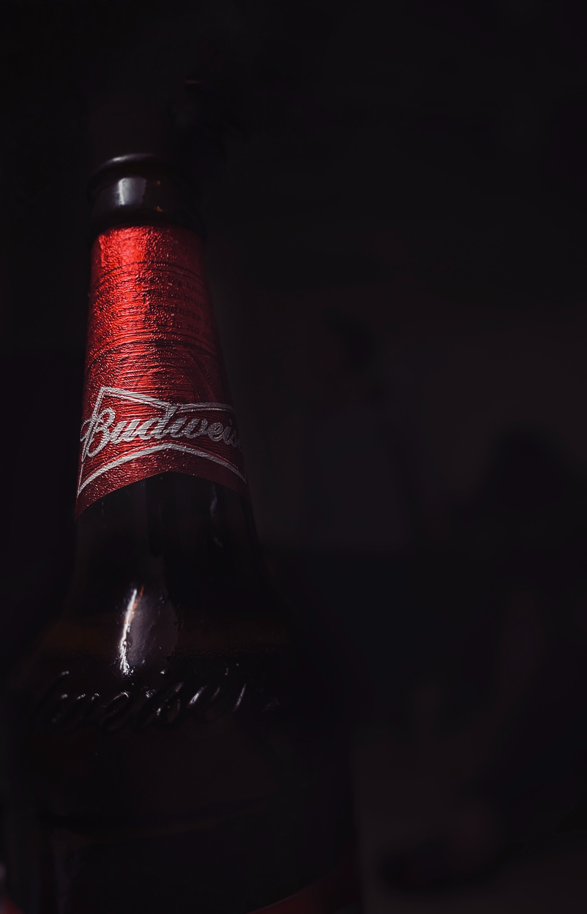

Beer
Budweiser
Asahi
heineken
Budweiser
(/ˈbʌdwaɪzər/)
is an American-style pale lager, part of AB InBev.
[1] Introduced in 1876 by Carl Conrad & Co. of St. Louis, Missouri
[2]
Budweiser
has become a large selling beer company in the United States. 